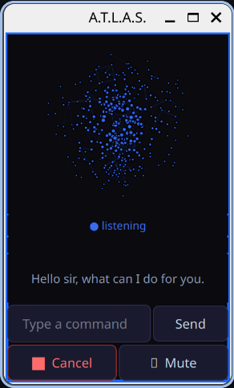
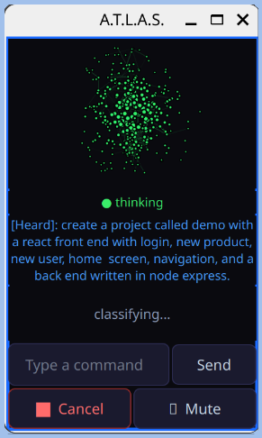
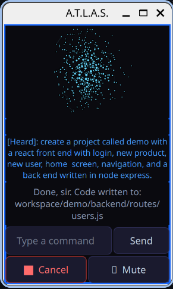
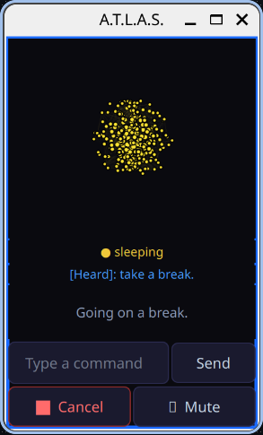
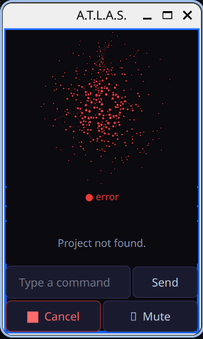

Atlas is a free, open-source AI assistant that runs on your desktop — plan your day, dig through files, automate the boring parts, without sending your life to someone else's server.
Two short walkthroughs — the first covers day-to-day use, the second gets into how it's built.
I built Atlas because I wanted an assistant that lived on my machine, not in someone else's data center — something that could open apps, drive my browser, and manage my files directly instead of just talking about it. It reads my calendar, drafts and sends email, and pulls in Gemini or Claude when a question calls for deeper reasoning or a longer document than it should handle alone.
Atlas talks, but it also acts — here's what it's actually built to do.
Opens applications, controls your browser, searches the web, and navigates pages on command — Atlas acts on your machine instead of describing what you should click.
Creates files and folders, generates code in Python, JavaScript, HTML and more, reads and summarizes PDFs, runs scripts, and manages your workspace directly.
Runs on Android and can send complex commands back to your computer — start a task from your desk, check on it from your pocket.
When enabled, Atlas can look at what's in front of it, identify objects, read text, and answer questions about what's in view.
Routes to Gemini for real-time information and long document analysis, or Claude for complex reasoning and large codebases — your choice of which to enable.
Optional integrations let Atlas check and manage your Google Calendar, and read and send email through Gmail — on your say-so, nothing automatic.
The full source is on GitHub. Read it, fork it, or just trust it a little more because you can.





Free, no account required. Pick your platform.